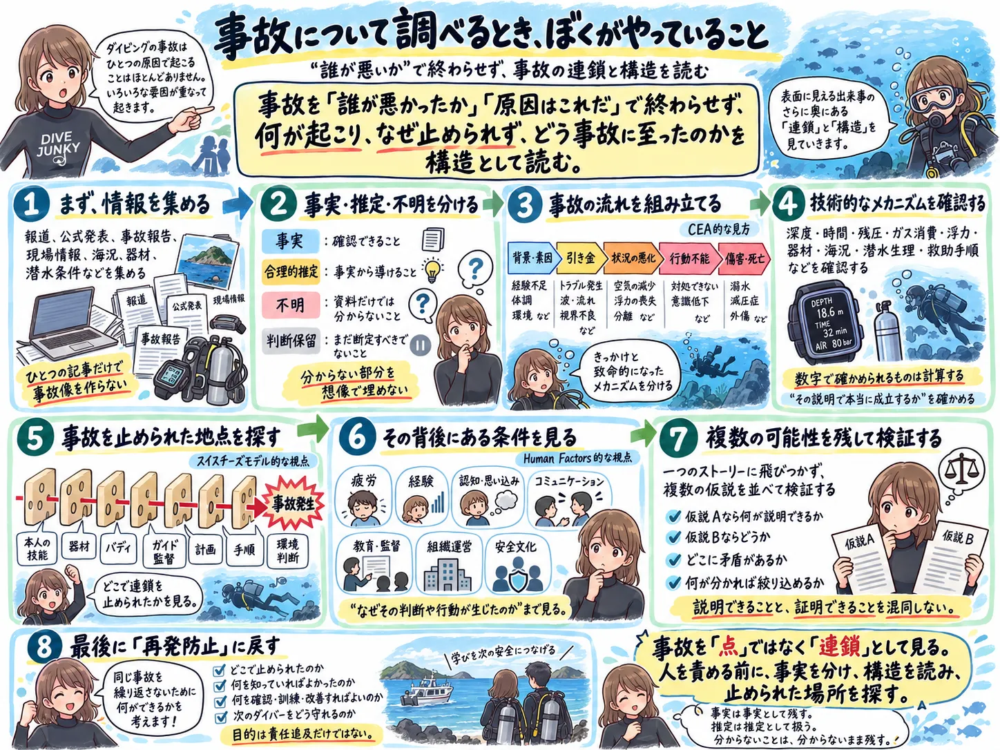

The road Orz passed by 2026 年 09 月
09 月 26 日 ( 土 )
Dive #222 ぼくの事故調査フレームワーク

事故について調べるときにぼくは図のようなことをしています。SE 時代に柳田邦夫先生のマッハの恐怖を読んで、それから安全工学や安全学に興味をもったことが大きく影響しています。
事故があったときに「こいつが悪い」で終わると事故に対する知見を一つも得ることができず、同じタイプの事故が繰り返されるから、その事故について極力深く掘り下げて調べます。
特にヒューマンエラーが起こる構造を深く掘っていくと、どうしても人間の限界というものを知ることになります。
するとそのようなヒューマンエラーと無縁な人間は１人もいない、という知見を得ることになります。自分自身もその構造の中にいることを知ります。そしてどんな有能な人であっても同じ構造の中にいることも知ることになります。
これは人として非常に不都合な真実で、それを認識することはとてもつらいことなのですけれど、でもそれを受け入れて、合理的な対策、カバーする仕組み、フェイルセーフの仕組みを考えていかないと、また同じタイプの事故が発生します。
ぼくは危ないダイバーを減らしたいという動機で、かつてインストラクターや開業を目指していましたが、実力のなさから断念しました。
でもまだやれることは残っていると信じて、いろいろ調べてまとめるということを続けています。
事故調査の素人なので、まったく不十分なのですけれど。
- Category :
- #Records of Orz's Road
- #事故調査整理
- #インシデント調査整理
- #ヒヤリハット調査整理
- #ダイビング
- #スクバーダイビング